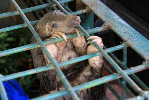
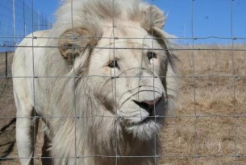

-

实施全球野生动物贸易禁令的必要性
近日，世界动物保护协会发布《预防全球大流行病——G20集团实施全球野生动物贸易禁令的必要性》报告指出，全球野生动物贸易系统性失灵以及各国立法缺漏和监管乏力，给生物多样性、动物福利、环境健康和公共卫生等领域带来诸多负面影响。报告提出，G20集团应该采取更全面和强有力的措施来降低相关风险，以预防未来全球大流行病的爆发。 -

韩国加大对非法繁殖濒危野生动物处罚力度
韩国的野生亚洲黑熊濒临灭绝，受到法律的严格保护。但以获取熊胆为目的的养熊业却给亚洲黑熊的保护带来严峻挑战。从2003年至今，世界动物保护协会与韩国绿色联盟（Green Korea United）开展了密切合作，致力于终止韩国的养熊业，保护韩国的亚洲黑熊免遭虐待。在各方积极推动下，2018年韩国政府为该国养殖取胆的黑熊全部实施了绝育手术，圈养黑熊的数量也从之前的1400头减少到目前的423头。 -

世界动物保护协会救助越南黑熊
在过去20多年，世界动物保护协会与当地伙伴以及越南政府合作，持续推动残忍的熊胆业的终结。2005年，在世界动物保护协会的协助下，越南政府对全国养殖的4300头黑熊进行了登记和电子芯片植入，以加强对养熊业的巡查和监管，确保没有新的黑熊进入该产业。任何缺乏登记注册文件或者没有进行电子芯片标记的黑熊，都将被政府依法罚没，并转移到政府或NGO运营的专业野生动物救护中心。 在各方的积极努力下，越南圈养的黑熊数量不断减少，目前仅存369头，较2005年的4300头下降了91%，其中河内有162头，是越南圈养黑熊数量最多的地区。 -
世界动物保护协会发布2020年度《农场动物福利商业基准》
近日，世界动物保护协会发布2020年度《农场动物福利商业基准》（Business Benchmark on Farm Animal Welfare）。该基准对全球150家大型食品公司的农场动物福利实践进行全面评估，是目前该领域最全面和最具权威性的全球性商业基准。报告发现，全球已有更多食品公司将农场动物福利纳入优先级业务，但均对动物福利改善效果披露不足。 -

南非政府宣布结束狮子养殖业
南非政府这一决定基于一份高级别专家组的报告。该专家组由南非林业渔业和环境部于2019年10月10日建立，包括25位来自不同领域的资深专家，旨在“审查与大象、狮子、豹子和犀牛管理、繁育、狩猎、贸易相关的政策、立法和实践”。